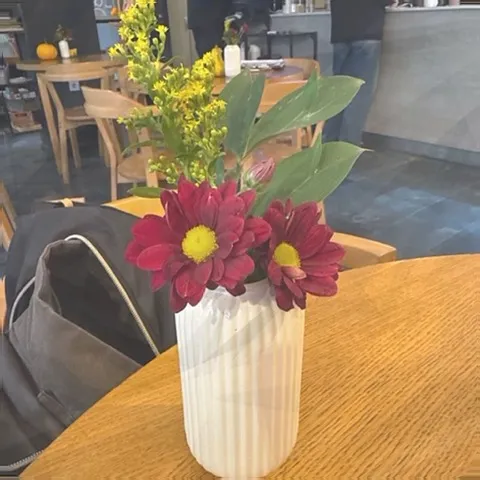
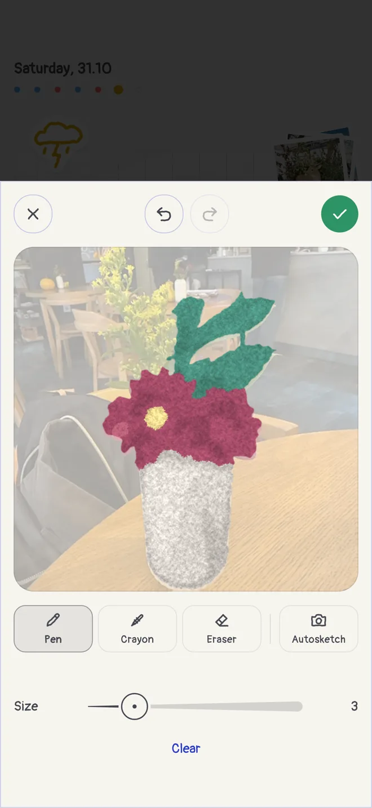
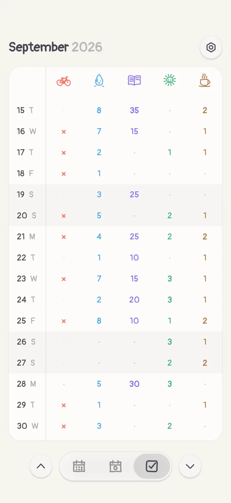

A diary that turns your photos into sketches
A photo doesn’t become a sketch by itself. In Boop Diary you ask for one: Autosketch draws the photo on the day’s sketch sheet, with a pen or in crayon, and the drawing is yours to finish.


How it works
- Open a day, tap + and choose Add sketch.
- Under the sheet, tap Autosketch and choose With a pen for clean lines, as if by hand, or In crayon for soft colour, as if in crayon.
- Take a photo or pick one from your library. Boop Diary draws it on the sheet.
- Draw over it with the pen or the crayon, rub out what you don’t need, and keep the sketch on that day.
Drawn on the phone itself
The drawing is made on your iPhone or iPad, and the photo is not uploaded anywhere. Autosketch works best on a photo with one clear subject in front: a person, a pet, a plant, a cup of coffee.
Then the rest of the day
- A mood in one tap. 15 faces, each a blot of its own colour you read at a glance.
- Habits colour the day. Tick off what you did, and the day’s doodle fills with the habits’ colours.
- The month in one poster. When a month ends, Boop Diary gathers it into one picture, its doodles, sketches or photos day by day, ready to share.

More questions? See the Boop Diary FAQ, or read about a diary with no account.